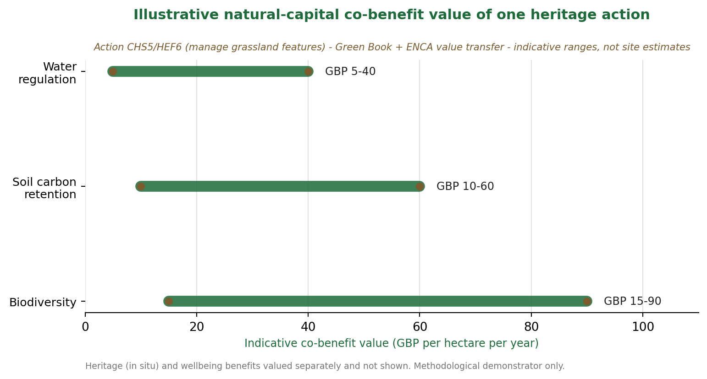

We take action CHS5 / HEF6 (manage historic and archaeological features on grassland). By keeping buried features under permanent, undisturbed grassland, the action avoids mechanical disturbance, which generates a chain of ecosystem-service co-benefits alongside the primary heritage outcome: soil carbon retention, water regulation, grassland biodiversity, heritage preservation, and access, landscape and wellbeing.

Valued using HM Treasury Green Book and Enabling a Natural Capital Approach, with value transfer per the Defra and eftec guidelines, and the DCMS and Historic England Culture and Heritage Capital framework as the bridge between heritage and natural-capital valuation. Benefits that cannot be defensibly monetised are reported in physical or qualitative terms. Heritage value is kept separate from natural capital to avoid double-counting.
Download the demonstrator (PDF)